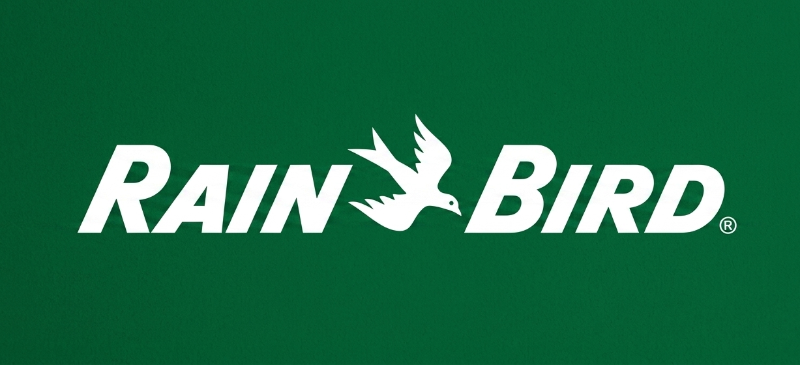
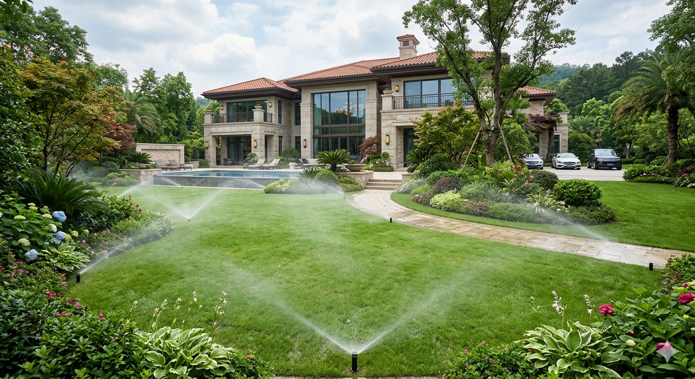

01 / CONTROL
智慧灌溉控制器
適用於景觀自動灌溉系統，依分區數量、連線方式與控制需求選擇設備。
- 產品類別
- Wi-Fi／智慧型控制器
- 選型重點
- 控制區數、連線與管理需求
IRRIGATION EQUIPMENT · ENGINEERING SOLUTIONS
從國際品牌設備選型，到自動噴灌配置、CAD 圖面與水力計算，
以完整系統思維，協助每一個場域建立可靠的灌溉方案。
WHAT WE DO
灌溉系統不只是設備的組合，更需要考量水源條件、流量、壓力、管路配置與現場環境。滙凱從產品供應到工程技術支援，協助客戶把需求轉化為可執行的系統方案。
PRODUCT PORTFOLIO
依照場域、流量、壓力與控制需求，
選擇合適的設備與系統零組件。
顯示全部產品分類
適用於景觀自動灌溉系統，依分區數量、連線方式與控制需求選擇設備。
依噴灑半徑、角度、流量與工作壓力，配置適合草坪及景觀場域的噴頭。
用於灌溉分區啟閉控制，依管徑、流量、操作壓力及控制電壓確認規格。
適用於植栽、溫室與農業場域，可依作物、種植間距及供水條件規劃。
依主支管配置、管路材質、施工方式與系統壓力，搭配所需管件及配件。
本區展示主要設備類別與選型重點；實際供應品牌、型號及技術規格，依可確認之原廠資料與供應品項更新。
GLOBAL IRRIGATION BRANDS

RAIN BIRDENGINEERING SERVICES
考量實際場地與供水條件，
讓設備、管路及控制系統有效整合。

ENGINEERING WITH SITE CONDITIONS IN MIND依植栽範圍、地形及噴頭特性規劃配置，檢視覆蓋範圍與分區。
彙整各區需求流量，評估管路壓損、末端壓力及系統操作條件。
依設計流速與水力需求，協助評估管徑、泵浦及供水配置。
整合控制分區、閥件與現場設備，建立清楚可靠的控制架構。
PROJECT APPLICATIONS
依照場域特性、植物需求與維護條件，
規劃適合的灌溉方式。
針對草坪、植栽區及建築周邊綠地，依場地邊界、植物配置與水源條件，評估噴頭位置、灌溉分區及管路配置。
 APPLICATION 02
APPLICATION 02依種植型態、作物需求與場域條件，評估滴灌、微噴及供水分區，兼顧末端出水需求與系統操作管理。
本區呈現既有網站之應用圖片與服務範疇；個別工程名稱、地點及施工範圍以可公開之實際專案資料為準。
ABOUT HONY KON
滙凱實業有限公司專注於灌溉設備供應與工程技術整合。從產品規格、流量與壓力條件，到配置與現場應用，我們以實際需求為出發點，協助客戶與工程夥伴找到合適的解決方式。
與我們討論需求 →CONTACT & INQUIRY
產品採購可提供品牌、型號與數量；工程諮詢可提供場地照片、CAD 圖面、面積及水源條件，方便進一步評估。